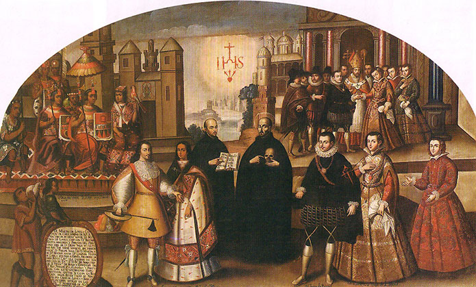
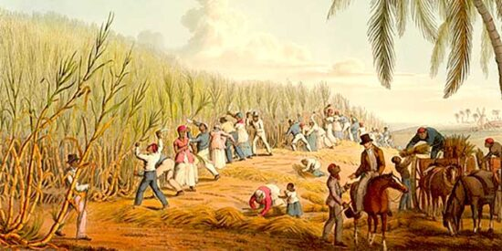
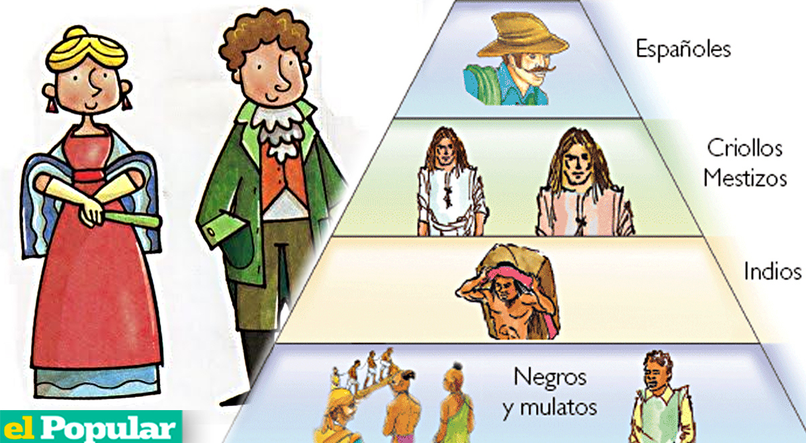
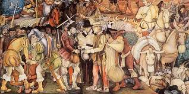
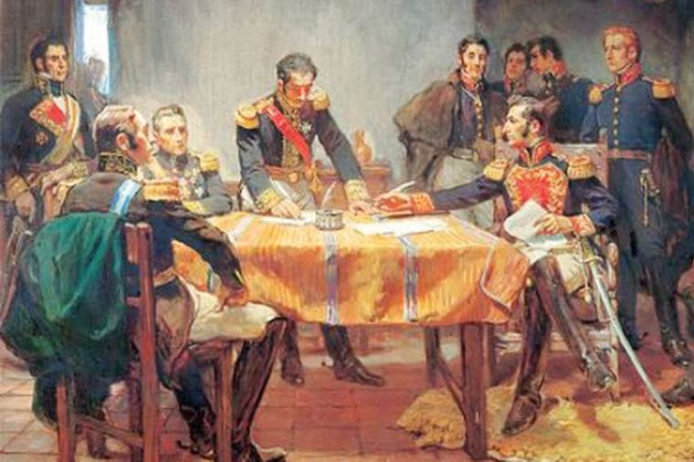

El Virreinato del Perú fue una de las entidades políticas más relevantes del Imperio Español en América, establecida en 1542 por Carlos I de España. Su creación fue una respuesta a la necesidad de organizar los vastos territorios que los conquistadores españoles habían anexado tras la caída del Imperio Inca. El virreinato se convirtió en el centro de la administración colonial española en Sudamérica. Lima, la capital, se consolidó rápidamente como el corazón de la política y la economía en la región, debido a su ubicación estratégica en la costa del Pacífico, lo que facilitaba el comercio con España. A lo largo de los tres siglos de existencia del virreinato, este experimentó cambios profundos tanto en su organización política como en su estructura económica y social. Su legado es crucial para entender la historia de América Latina, ya que no solo marcó la vida política, sino también las costumbres, el arte, la religión y las bases de la identidad de muchas naciones que surgieron después de la independencia.
La economía del Virreinato del Perú fue uno de los pilares que sostuvo la supremacía del Imperio Español durante gran parte de la época colonial. A lo largo del virreinato, la explotación de las minas de Potosí (actual Bolivia) y Huancavelica (Perú) fue el motor principal de la economía, especialmente la extracción de plata, que representaba la mayor parte de las riquezas extraídas de América. La mita, un sistema de trabajo forzoso impuesto por los españoles a los indígenas, fue la base para obtener esta riqueza minera. Millones de indígenas fueron obligados a trabajar en las minas bajo condiciones extremas, lo que resultó en una alta mortalidad y sufrimiento. Además de la minería, la agricultura también jugó un papel crucial, con cultivos como el maíz, papa y coca, productos fundamentales para la dieta de los colonos y para el comercio con otras partes del imperio. La economía estaba completamente subordinada a las políticas comerciales de España, lo que significaba que solo se podían realizar intercambios con la metrópoli y que los productos del virreinato eran monopolizados por los comerciantes españoles.
La sociedad del Virreinato del Perú estaba fuertemente estratificada, con una jerarquía muy clara que estaba determinada principalmente por el origen racial y el estatus social. En la cima de la pirámide se encontraban los españoles peninsulares, aquellos nacidos en España, quienes ocupaban los puestos más altos en la administración y la Iglesia. Justo debajo de ellos se encontraban los criollos, descendientes de españoles nacidos en América, quienes, aunque poseían tierras y riquezas, no podían acceder a los mismos privilegios que los peninsulares. En la base de la pirámide social estaban los mestizos, resultado de la mezcla entre europeos e indígenas, y los indígenas, que constituían la mayoría de la población y sufrían un gran nivel de explotación. Los esclavos africanos, traídos a América para trabajar en plantaciones y minas, también eran parte de la base de esta pirámide. Esta jerarquía social rigió las relaciones políticas y económicas durante todo el periodo colonial, creando una estructura que dificultaba el ascenso social y promovía una marcada división entre las clases.
La cultura del Virreinato del Perú fue una mezcla compleja de influencias europeas e indígenas, lo que dio lugar a un sincretismo cultural único. La Iglesia Católica jugó un papel fundamental en la formación de la identidad cultural del virreinato, ya que además de ser una institución religiosa, era una herramienta de control social. Los misioneros españoles, en su mayoría franciscanos, dominicos y jesuitas, se encargaron de evangelizar a los pueblos indígenas, lo que llevó a la creación de nuevas formas de arte religioso que combinaban tradiciones europeas y locales. El arte barroco se desarrolló con gran esplendor en el virreinato, con iglesias adornadas con dorados, esculturas religiosas y pinturas de gran calidad. En cuanto a la educación, Lima se destacó por ser un centro intelectual, con la Universidad de San Marcos, fundada en 1551, siendo la primera de América. También surgieron importantes corrientes literarias y científicas influenciadas por la metrópoli, aunque siempre con un toque local. Sin embargo, la cultura indígena no desapareció; muchas de sus tradiciones y costumbres perduraron y se fusionaron con las de los colonizadores, formando la base de la identidad cultural que hoy conocemos en Perú y en muchos países sudamericanos.
El Virreinato del Perú fue uno de los últimos en alcanzar la independencia en América Latina. Aunque las primeras revoluciones independistas comenzaron a finales del siglo XVIII, el Virreinato del Perú se mantuvo leal a la corona española hasta principios del siglo XIX. En 1821, José de San Martín, líder de la independencia de Argentina, proclamó la independencia del Perú en Lima. Sin embargo, las fuerzas realistas continuaron luchando hasta 1824, cuando las tropas comandadas por Simón Bolívar derrotaron definitivamente a los realistas en la Batalla de Ayacucho. Esta victoria consolidó la independencia del Perú y marcó el fin de más de tres siglos de dominio español en la región. La independencia fue un proceso largo y complicado que implicó no solo enfrentamientos militares, sino también luchas sociales, económicas y culturales que transformaron el destino de Perú y el resto de América Latina, dando paso a nuevas repúblicas que debían redefinir su identidad y organización política.
